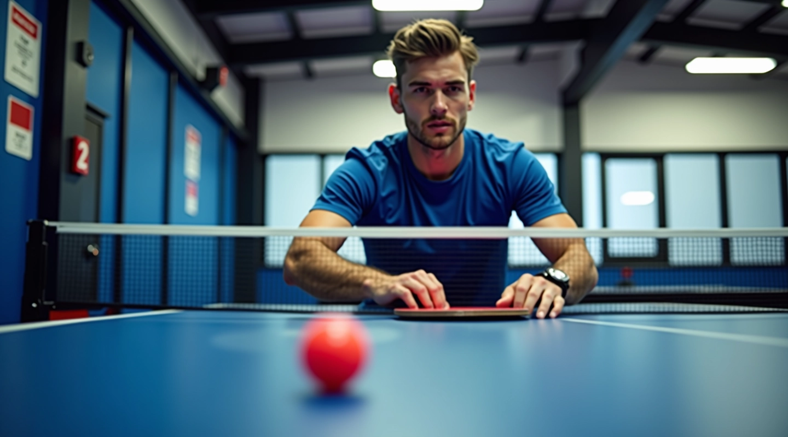
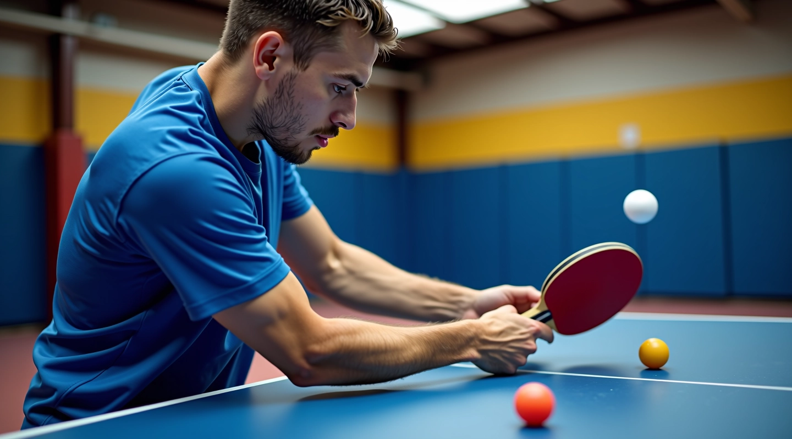
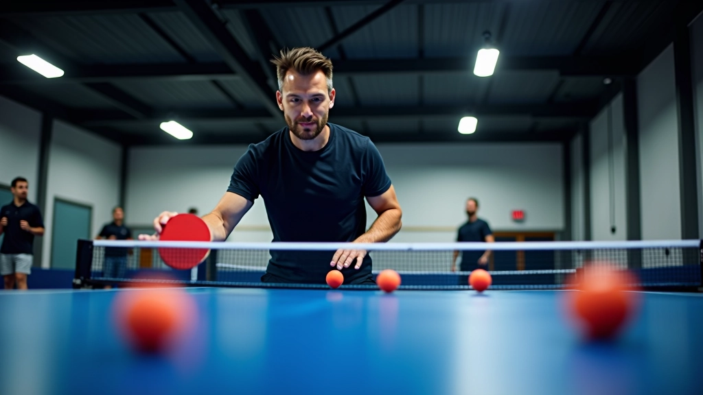

تقنيات الضربة الأمامية المتقدمة مع التغذية المتعددة
تعلم كيفية تحسين دقة ضربتك الأمامية باستخدام تمارين التغذية المتعددة بالكرات والتركيز على التحكم والقوة
اقرأ المقالة
تطوّر مهاراتك من خلال تمارين متخصصة وفعّالة في صالة المعادي
تمارين التغذية المتعددة بالكرات توفّر فرصة فريدة لتطوير ردود الأفعال السريعة والتحكم الدقيق بالكرات. تركّز على تحسين السرعة والتوازن والحركة الجانبية بطريقة آمنة وفعّالة.
تعرّف على الأساسياتتعلّم كيفية تحسين دقة ضربتك الأمامية باستخدام تمارين التغذية المتعددة. نركّز على التحكم والقوة والاستقرار في كل ضربة.
هذه التمارين مصمّمة للاعبين المتوسطين والمتقدمين الذين يريدون الارتقاء بمستواهم إلى مستويات احترافية.
اقرأ المزيد عن الضربات المتقدمة

نبدأ معك من الأساسيات. التركيز على ردود الأفعال والسرعة والحركة الصحيحة في البداية.
البرنامج منظّم بعناية لضمان تطور مستقر وآمن، مع تقييم مستمر لمستوى كل لاعب.
اكتشف برنامج المبتدئينالتمارين المتخصصة تساعد على تحسين السرعة والحركة الجانبية والتوازن على الطاولة.
من خلال تمارين التغذية المتعددة، يكتسب اللاعب القدرة على التحرك بسرعة والاستجابة لأي موقف في اللعب.
تطوير مهارات السرعةتصفح المحتوى الأساسي بسهولة
نركّز على تطوير المهارات الأساسية والمتقدمة
التحكم والدقة
السرعة والرد السريع
التوازن والحركة
التقدم المستمر
برامج مخطط لها بعناية لكل مستوى
فريق تدريب ذو خبرة عملية عالية
أفضل الأدوات والمعدات المتاحة
تطور ملموس في مهارات اللاعبين
اكتشف أحدث الموارد التدريبية
تعلم كيفية تحسين دقة ضربتك الأمامية باستخدام تمارين التغذية المتعددة بالكرات والتركيز على التحكم والقوة
اقرأ المقالةدليل شامل لفهم كيفية استخدام تمارين التغذية المتعددة لتطوير ردود الأفعال والسرعة في اللعب
اقرأ المقالة
برنامج تدريبي متخصص يركز على تحسين السرعة والتوازن والحركة الجانبية باستخدام تمارين تغذية متقدمة
اقرأ المقالةاسمع من اللاعبين والآباء الذين استفادوا من البرامج
ما كنت متأكداً من البداية، لكن بعد الأسابيع الأولى، لاحظت تحسناً حقيقياً في سرعة ردود أفعالي. المدربون يشرحون كل شيء بوضوح وما بيتركوك تشعر بالضياع.
أحمد، 16 سنة
ابني كان يخاف من التدريب في البداية، بس الآن بيتطلع لكل جلسة. التطور لي شفته فيه حقيقي جداً، والمدربين فعلاً اهتمامهم بكل لاعب على حدة.
أم محمد، ولية أمر
البرنامج مصمّم بذكاء. الكرات المتعددة خلت اللعب أكثر تحدياً بطريقة جيدة. لقيت نفسي بأحسّن من قبل في المباريات الحقيقية. مستنى أشوف الفرق بعد كام شهر أكتر.
سارة، 14 سنة
سواء كنت مبتدئاً أو متقدماً، عندنا البرنامج المناسب لك. تواصل معنا اليوم واكتشف كيف يمكننا مساعدتك على الارتقاء بمستواك في تنس الطاولة.
تواصل معنا الآننستخدم ملفات تعريف الارتباط لتحسين تجربتك على الموقع. بالمتابعة، أنت توافق على سياسة الخصوصية الخاصة بنا.